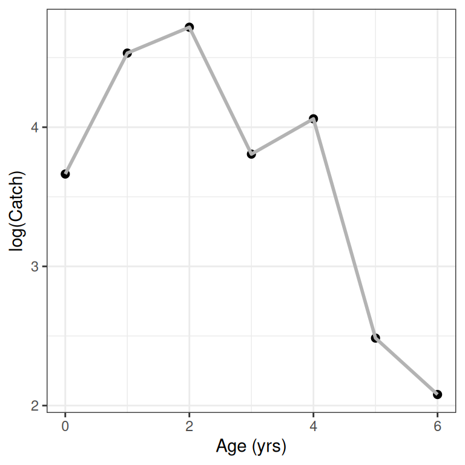
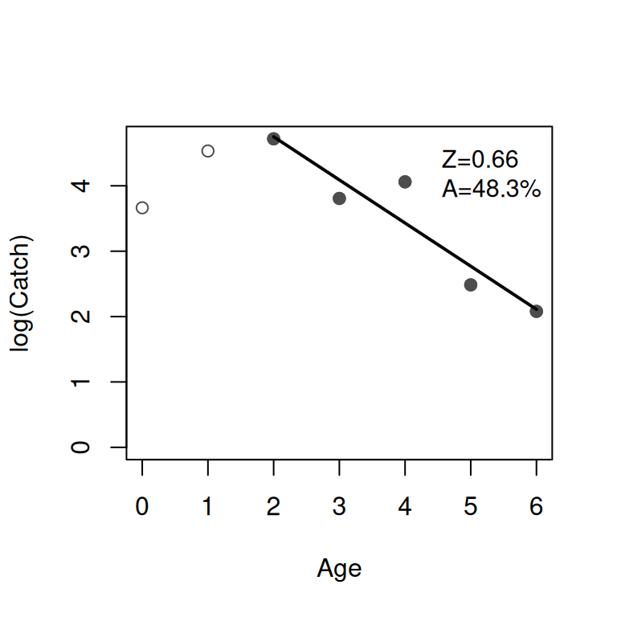
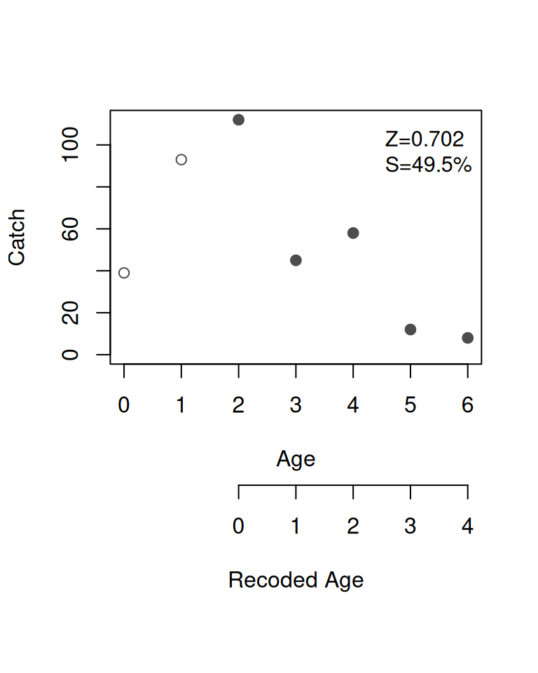
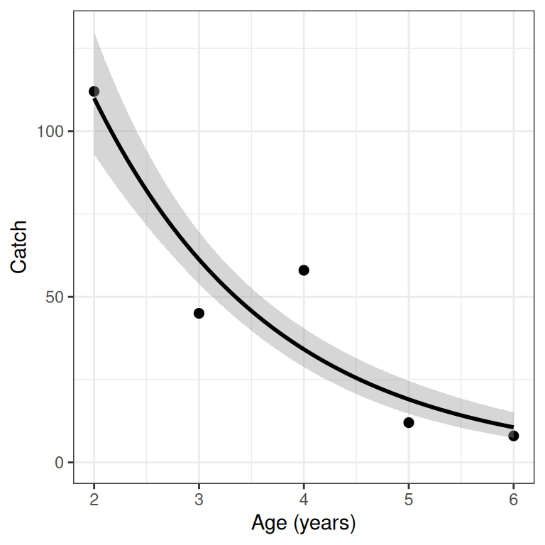
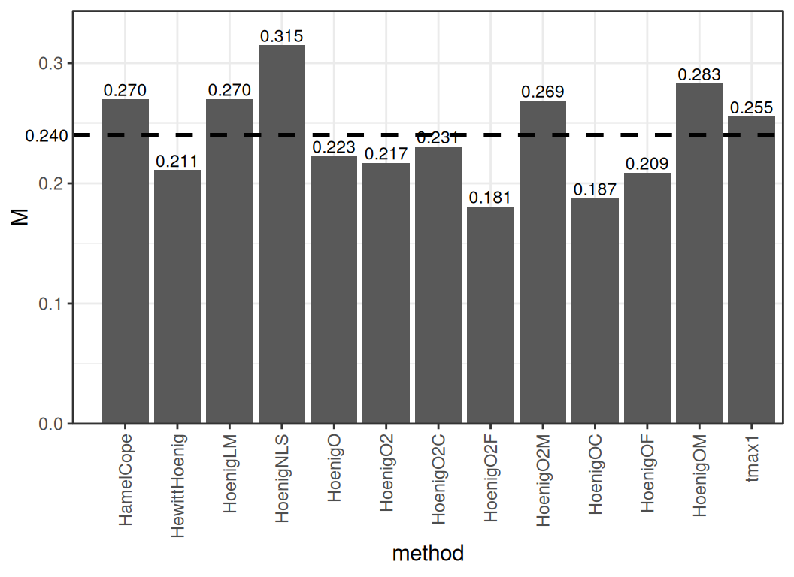

Introduction
The objective of this article is to briefly describe how to use functions in FSA to estimate total and component mortality rates with methods commonly used in fisheries. It assumes that you are familiar with data and methods commonly used to estimate mortality, which are discussed in most fisheries science books including Introductory Fisheries Analyses with R.
The following packages are used herein.
Total Mortality – Catch-Curves
Methods that use the frequencies of fish at each age to estimate mortality rates are commonly referred to as catch curve methods. There are three common catch-curve methods used to estimate instantaneous total mortality (), which can be easily converted to annual total mortality rate () – linear regression models, Chapman-Robson method, or general linear models. Linear regression models are the most commonly used method, but recent authors have strongly suggested that they should not be used (see here and here).
Due to gear selectively, most catch-at-age data will have an ascending limb with fish of ages not yet fully recruited to the gear, a peak where fish are beginning to fully recruit to the gear, and a descending limb where fish are fully recruited to the gear but the frequency is declining due to the cumulative mortality over time. Catch-curve methods are applied to the descending limb only. A variety of rules have been proposed to objectively define the descending limb of a catch curve. Most commonly, the peak has been defined as the age, or one year older than the age, with the greatest catch. Several rules1 have also been used to truncate the right side of the descending limb in an attempt to reduce the bias in estimates of associated with few fish of older ages.
Catch curve methods will be demonstrated in this article with catches-at-age of Brook Trout captured in Tobin Harbor (Michigan) from 1996-1998. These data are simple and, thus, are entered directly into a data.frame below but these data could have been entered into an external file and then loaded into R. Additionally, catch-at-age data often result from summarizing ages recorded for individuals or derived from an age-length key (see the Age-Length Key article).
bkt <- data.frame(age=0:6,
ct=c(39,93,112,45,58,12,8))A plot of log catch versus age (Figure 1) suggests that ages 2 through 6 define the descending limb of the catch curve for these data.
ggplot(data=bkt,mapping=aes(x=age,y=log(ct))) +
geom_point(size=2) +
geom_line(color="gray70",linewidth=1) +
scale_y_continuous(name="log(Catch)") +
scale_x_continuous(name="Age (yrs)") +
theme_bw()
Linear Regression Models
Instantaneous total mortality rate () may be estimated by the slope of the linear regression of log catch on age for the descending limb of the catch-curve. This estimate is often biased (low). An ad hoc weighting scheme has often been used to adjust for this bias.
The unweighted linear regression method is implemented in catchCurve() with a first argument as a formula of the form catch~age, where catch and age generically represent the variables that contain the catch and age data. The data.frame that contains catch and age is given in data=. This data.frame does NOT have to be restricted to only ages on the descending limb of the catch curve. However, if ages are included in the data.frame that are not on the descending limb, then the ages on the descending limb must be given as a vector in ages2use=.2 The result of catchCurve() should be assigned to an object that can be submitted to summary() to extract the estimates of and and to confint() for confidence intervals.3 These results are column-bound together here with cbind() to make a succinct summary table.
thcc <- catchCurve(ct~age,data=bkt,ages2use=2:6)
cbind(summary(thcc),confint(thcc))
#> Estimate Std. Error t value Pr(>|t|) 95% LCI 95% UCI
#> Z 0.659987 0.136741 4.826549 0.01695159 0.2248162 1.095158
#> A 48.314197 NA NA NA 20.1337012 66.551321A quick (i.e., not publication quality) plot to illustrate the results is created by submitting the catchCurve() object to plot() (Figure 2).4
plot(thcc)
The ad hoc weighted linear regression method is implemented exactly as described above but by including weighted=TRUE in catchCurve().
thccw <- catchCurve(ct~age,data=bkt,ages2use=2:6,weighted=TRUE)
cbind(summary(thccw),confint(thccw))
#> Estimate Std. Error t value Pr(>|t|) 95% LCI 95% UCI
#> Z 0.6430183 0.1417433 4.5365 0.02004993 0.191928 1.094109
#> A 47.4296703 NA NA NA 17.463369 66.516206Chapman-Robson Method
The Chapman-Robson method is implemented in chapmanRobson() using the same arguments as used with catchCurve().
thcr <- chapmanRobson(ct~age,data=bkt,ages2use=2:6)
cbind(summary(thcr),confint(thcr))
#> Estimate Std. Error 95% LCI 95% UCI
#> S 49.4600432 2.3260749 44.9010202 54.0190662
#> Z 0.7018264 0.1153428 0.4757586 0.9278941
plot(thcr)
The default for chapmanRobson() is to use the preferred bias-correction proposed by Smith et al. (2012). Other less-preferred methods may be used with zmethod=, as described in the chapmanRobson() documentation.
Poisson GLM
FSA does not provide any functions to assist with using general linear models to estimates . However, R code is provided in an appendix to this useful article that thoroughly demonstrates this method, along with important diagnostic tools. Part of this method is introduced below to help one get started with the code provided in that article.
Simple general linear models can be fit in R with glm(). In this application, the data must first be restricted to the catch of fish only at those ages on the descending limb of the catch-curve. In this example (as shown above), this was for ages 2-6, which for these data is simply all ages greater than age-2. The code below creates a new data.frame using filter() from dplyr with just those ages.5
bkt2 <- bkt |>
dplyr::filter(age>=2)
bkt2
#> age ct
#> 1 2 112
#> 2 3 45
#> 3 4 58
#> 4 5 12
#> 5 6 8The first two arguments to glm() are the same as for catchCurve() and chapmanRobson() – i.e., a formula of the form catch~age with the data.frame given in data=. The Poisson regression is declared by including family="poisson" in glm(). The result of glm() shouled be assigned to an object.
thpglm <- glm(ct~age,data=bkt2,family="poisson")The model parameter estimates and other useful information are extracted from the glm() object with summary(). The parameter estimates only can be retained by appending $coefficients to the summary() call. Confidence intervals are extracted with confint(). These results are column-bound together to provide a result similar to what was returned from catchCurve() and chapmanRobson().
The results returned in the (Intercept) row can be largely ignored. Information for is in the second row which will be labeled with the name of your “age” variable. Note that this information is actually for as the is the negative slope of the descending limb, and glm() is simply returning the value of that slope. Thus, the estimate of is 0.585 with a 95% confidence interval of 0.477-0.698.
The fitted line (with confidence band) from the Poisson regression can be added to a ggplot2 object with geom_smooth() using method="glm" and method.args=list(family=poisson) (Figure 4).
ggplot(data=bkt2,mapping=aes(x=age,y=ct)) +
geom_point(size=2) +
geom_smooth(method="glm",method.args=list(family=poisson),color="black") +
scale_y_continuous(name="Catch",limits=c(0,NA)) +
scale_x_continuous(name="Age (years)") +
theme_bw()
#> `geom_smooth()` using formula = 'y ~ x'
Properly estimating using general linear models is more complex (but not more complicated) then what is shown here. Please consult the article mentioned above for a more complete explanation and example of this method.
Total Mortality - Capture-Recapture
Estimates of apparent survival from one time period to the next can be estimated for open populations using capture-recapture data. Traditionally, these methods used rather than to represent the survival rate, a convention that is also used here.
These methods generally require data from individually tagged fish recorded in the capture history format. The same capture history data for Cutthroat Trout greater than 180 mm captured from Auke Lake (Alaska) during the summers of 1998-2006 used in the Mark-Recapture article are used here. These data are loaded, capture histories are summarized, and the Method B table observed as shown below.6.
data(CutthroatAL)
peek(CutthroatAL,n=6)
#> id y1998 y1999 y2000 y2001 y2002 y2003 y2004 y2005 y2006
#> 1 1 0 0 0 0 0 0 0 0 1
#> 337 337 0 0 0 0 0 0 1 0 0
#> 674 674 0 0 0 0 0 1 1 1 1
#> 1010 1010 0 0 0 1 0 0 0 0 0
#> 1347 1347 0 1 0 0 0 0 0 0 0
#> 1684 1684 1 1 1 0 0 0 0 0 0
cut.ch <- capHistSum(CutthroatAL,cols2use=-1)
cut.ch$methodB.top
#> i=1 i=2 i=3 i=4 i=5 i=6 i=7 i=8 i=9
#> j=1 NA 22 4 0 0 0 0 0 0
#> j=2 NA NA 90 4 2 0 0 0 0
#> j=3 NA NA NA 37 13 1 0 0 0
#> j=4 NA NA NA NA 43 2 1 0 0
#> j=5 NA NA NA NA NA 96 2 2 0
#> j=6 NA NA NA NA NA NA 88 10 1
#> j=7 NA NA NA NA NA NA NA 40 4
#> j=8 NA NA NA NA NA NA NA NA 13
#> j=9 NA NA NA NA NA NA NA NA NA
cut.ch$methodB.bot
#> i=1 i=2 i=3 i=4 i=5 i=6 i=7 i=8 i=9
#> m 0 22 94 41 58 99 91 52 18
#> u 89 330 198 192 201 271 199 82 122
#> n 89 352 292 233 259 370 290 134 140
#> R 89 352 292 233 259 370 290 134 0The Jolly-Seber method was introduced in the Mark-Recapture article as a method to estimate abundance in an open population. When three or more samples of marked fish have been collected, the Jolly-Seber method can also be used to estimate the apparent survival () from sampling event to . The specifics underlying this method are described elsewhere, including in Introductory Fisheries Analyses with R.
Jolly-Seber calculations are performed by submitting the capHistSum() object to mrOpen() from FSA.7
cut.mr <- mrOpen(cut.ch)Estimates of and associated confidence intervals are extracted from the mrOpen() object with summary() and confint() including parm="phi" in both.
cbind(summary(cut.mr,parm="phi"),confint(cut.mr,parm="phi"))
#> phi phi.se phi.lci phi.uci
#> i=1 0.411 0.088 0.237 0.584
#> i=2 0.349 0.045 0.261 0.436
#> i=3 0.370 0.071 0.231 0.509
#> i=4 0.218 0.031 0.159 0.278
#> i=5 0.437 0.041 0.356 0.517
#> i=6 0.451 0.069 0.316 0.585
#> i=7 0.268 0.072 0.127 0.409
#> i=8 NA NA NA NA
#> i=9 NA NA NA NAThus, for 2003 (i.e., ) the apparent survival to the following year was 0.451 with a 95% CI from 0.316 to 0.585.
Methods for using log-linear models through the Cormack-Jolly-Seber method to estimate using packages other than FSA are described in Introductory Fisheries Analyses with R.
Natural Mortality
Instantaneous natural mortality () is important for modeling fish populations but is notoriously difficult to estimate. A thorough review of methods to estimate is here. One method described therein exploits the generally high correlation between and various life history or abiotic factors to develop simple models for predicting from these other factors. Here, these methods are collectively referred to as meta-analysis estimator equations. Many of these methods were also thoroughly reviewed here with clear recommendations for their use (or not).
Many of these models for estimating from life history or abiotic factors are available in metaM() of FSA. The list of potential methods that can be used and some specifics about the methods, including which life history or abiotic parameters are required for the method, are in the documentation for metaM().
For example, (and the directly related conditional natural mortality ()) can be estimated with the "HamelCope" method, which requires an estimate of the maximum age of fish in the population provided in tmax=.
metaM("HamelCope",tmax=20)
#> M cm method name givens
#> 1 0.27 0.2366205 HamelCope Hamel and Cope (2022) tmax equation tmax=20Multiple methods can be used by including the method names in a vector given to metaM().
Methods that use different input parameters can also be calculated simultaneously as long as the required input parameters for all of the methods are included.
Some common methods have been grouped together such that all methods in the group may be chosen by giving the “group name” as the first argument to metaM().8 For example, all methods that use tmax= are in a group called tmax.
metaM("tmax",tmax=20)
#> M cm method name
#> 1 0.2700000 0.2366205 HamelCope Hamel and Cope (2022) tmax equation
#> 2 0.2554500 0.2254321 tmax1 Then et al. (2015) tmax equation
#> 3 0.3150387 0.2702394 HoenigNLS Then et al. (2015) Hoenig (NLS) equation
#> 4 0.2227269 0.1996666 HoenigO Hoenig (1983) combined equation (OLS)
#> 5 0.2089439 0.1885592 HoenigOF Hoenig (1983) fish equation (OLS)
#> 6 0.2829601 0.2464502 HoenigOM Hoenig (1983) mollusk equation (OLS)
#> 7 0.1874442 0.1709246 HoenigOC Hoenig (1983) cetacean equation (OLS)
#> 8 0.2171834 0.1952177 HoenigO2 Hoenig (1983) combined equation (GM)
#> 9 0.1808092 0.1654054 HoenigO2F Hoenig (1983) fish equation (GM)
#> 10 0.2687065 0.2356324 HoenigO2M Hoenig (1983) mollusk equation (GM)
#> 11 0.2306387 0.2059737 HoenigO2C Hoenig (1983) cetacean equation (GM)
#> 12 0.2701739 0.2367532 HoenigLM Then et al. (2015) Hoenig (LM) equation
#> 13 0.2110000 0.1902259 HewittHoenig Hewitt & Hoenig (2005) tmax equation
#> givens
#> 1 tmax=20
#> 2 tmax=20
#> 3 tmax=20
#> 4 tmax=20
#> 5 tmax=20
#> 6 tmax=20
#> 7 tmax=20
#> 8 tmax=20
#> 9 tmax=20
#> 10 tmax=20
#> 11 tmax=20
#> 12 tmax=20
#> 13 tmax=20It may be desirable to estimate with a wide variety of methods and then compute the mean of the returned estimates to be used in further analyses.
Finally, Figure 5 illustrates how one might examine multiple estimates of with the mean superimposed.
ggplot(data=res,mapping=aes(x=method,y=M)) +
geom_bar(stat="identity") +
geom_hline(yintercept=mnM,linewidth=1,linetype="dashed") +
geom_text(mapping=aes(label=formatC(M,format="f",digits=3)),
vjust=-0.25,size=3) +
annotate(geom="text",x=0,y=mnM,
label=formatC(mnM,format="f",digits=3),
hjust=1.1,size=3) +
scale_y_continuous(expand=expansion(mult=c(0,0.09))) +
theme_bw() +
theme(axis.text.x=element_text(angle=90,vjust=0.5,hjust=1)) +
coord_cartesian(clip="off")
Fishing Mortality Estimates
FSA does not provide any functions that directly help estimate instantaneous fishing mortality. Several methods that do not require special purpose functions9 and methods that are implemented in other packages are discussed briefly in Introductory Fisheries Analyses with R.